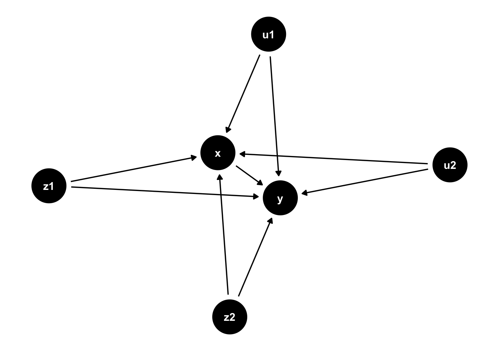

Doubly robust methods can be very useful for causal inference. Why? They combine two models: one for the outcome, and one for the treatment. This creates a model that is doublyrobust. The question is….robust to what?
Model Misspecification
Every model ever made is misspecified. Why? Because it’s not exact, it’s an approximation of the real world. This can lead to bias. How much bias depends on how much the model is misspecified. If close enough, there is minimal bias. If grossly misspecified, a lot more bias.
Doubly robust methods can be quite helpful with this. If either of the two models is correctly specified (or close), then our bias will be less than either model alone.
This begs the question….what else can we use doubly robust methods for?
Unmeasured Confounding
The villain to every observational study ever conducted. The ever lurking….unmeasured confounding.
There are several ways we can mitigate this villain’s powers. The most obvious tool is randomization, however in observational research we can’t do that. One option is to use sensitivity analyses to better understand how it would impact us.
However….what about doubly robust methods? Would these be powerful enough to mitigate our villian’s powers?
Let’s find out!
Enter the Simulation
To see whether this hair-brained scheme could work, we’ll simulate some data. Let’s lay out some ground rules for our simulation:
Going to run it 1000 times (chosen due to run time/don’t want our laptops to implode)
Sample size of 250 (arbitrary)
Two measured confounders (one continuous, one binary)
Two unmeasured confounders (both continuous)
Binary treatment
Continuous outcome
Target estimand will be the average treatment effect (ATE)
Methods we’ll explore:
Individual probability weighting only
Generalized linear model (outcome model only)
Doubly robust: using the same covariates in both the propensity score model and the outcome model
Code
# Title: Setup # Description: This code is the setup for what we will be using later. It includes the libraries and any functions that we may need. library(tidyverse) # ol' faithfullibrary(WeightIt) # for IP weightinglibrary(kableExtra) # for formatting table outputlibrary(ggdag) # for drawing a DAG #... Functions ----# We will use this function to simulate data sim_data <-function(n =250, # sample size beta_trt =1.5, # treatment effect# Parameters for Z1 z1_mean =5, z1_sd =1, # Parameters for Z2z2_size =1, z2_prob =0.5, # Parameters for U1u1_mean =10, u1_sd =3,u2_mean =2, u2_sd =0.5,# Confounder - Effect on Xz1_on_x =0.05, z2_on_x =0.5, u1_on_x =0.08, u2_on_x =0.8, # Confounder - Effect on Yz1_on_y =0.5, z2_on_y =0.7,u1_on_y =0.4, u2_on_y =2){# Creating the Dataframe df <-data.frame(z1 =rnorm(n = n, mean = z1_mean, sd = z1_sd), # measured continuous confounderz2 =rbinom(n = n, size = z2_size, prob = z2_prob), # measured binary confounderu1 =rnorm(n = n, mean = u1_mean, sd = u1_sd), # unmeasured confounder u2 =rnorm(n = n, mean = u2_mean, sd = u2_sd) # unmeasured confounder ) %>% dplyr::mutate(beta_trt =1.5, prob =plogis(u1_on_x*u1 - u2_on_x*u2 + z1_on_x*z1 + z2_on_x*z2), x =rbinom(n = n, size =1, prob = prob), y = beta_trt*x + z1_on_y*z1 + z2_on_y*z2 + u1_on_y*u1 + u2_on_y*u2 +rnorm(n = n, mean =0, sd =1)#y = beta_trt*x + z1_on_y*z1 + z2_on_y*z2 + rnorm(n = n, mean = 0, sd = 1) )# Return the dataframereturn(df)}
And of course, we need a directed acyclic graph (DAG)!
Code
theme_set(theme_dag())dag_example <- ggdag::dagify( x ~ z1 + z2 + u1 + u2, y ~ z1 + z2 + u1 + u2 + x, exposure ="x",outcome ="y")ggdag::ggdag(dag_example, layout ="nicely")

Perfectly Imperfect
For our first scenario, let’s assume that we perfectly specify both models based on the data we have. We will include both of the measured confounders (z1 & z2), in each model. However, the model will still be imperfect since there is unmeasured confounding.
How does it look for each method?
Code
# Inverse Probability Weighting (IPW) ----ipw <-function(sample.size){ trt_effect <-1.5# same as in sim_data() function # Simulating data df <-sim_data()# Fitting PS model - estimating the average treatment effect and stabilizing the weights ps.mod <- WeightIt::weightit(x ~ z1 + z2, data = df, method ="glm", estimand ="ATE", stabilize =TRUE)# Fitting outcome model mod <-glm_weightit(y ~ x, # note: not doubly robust, so only including exposure variablefamily =gaussian(link ="identity"), data = df,weights = ps.mod$weights) estimate <- broom::tidy(mod)$estimate[2] # this is the estimate bias_for_one = estimate - trt_effect # comparing the estimate to the "true" effect df_bias =data.frame( bias_for_one, estimate # need for estimating relative precision later )return(df_bias)}# Repeating 1000 times using a sample size of 250output_list <-replicate(1000, ipw(sample.size =250), simplify =FALSE)df.out.ipw <-do.call(rbind, output_list) %>%# reformatting# Adding a new column that will be used to estimate the Monte Carlo SE of the estimatemutate(squared = (bias_for_one -mean(bias_for_one))^2,residuals_squared = (estimate -mean(estimate))^2 )# Calculating the mean bias and Monte Carlo SE of estimate# See Morris et al. (2019) for details on calculating theseipw.bias <-mean(df.out.ipw$bias_for_one) # bias ipw.se.of.bias <-sqrt(sum(df.out.ipw$squared)*(1/ (1000*999))) # Monte Carlo SE of bias (1000 is number of simulations, 999 is n - 1)# Outcome Model ----out_mod <-function(sample.size){ trt_effect <-1.5# same as in sim_data() function # Simulating data df <-sim_data()# Fitting outcome model mod <-glm(y ~ x + z1 + z2, # note: not doubly robust for this examplefamily =gaussian(link ="identity"), data = df) estimate <- broom::tidy(mod)$estimate[2] # this is the estimate bias_for_one = estimate - trt_effect # comparing the estimate to the "true" effect df_bias =data.frame( bias_for_one, estimate # need for estimating relative precision later )return(df_bias)}# Repeating 1000 times using a sample size of 250output_list <-replicate(1000, out_mod(sample.size =250), simplify =FALSE)df.out.outmod <-do.call(rbind, output_list) %>%# reformatting# Adding a new column that will be used to estimate the Monte Carlo SE of the estimatemutate(squared = (bias_for_one -mean(bias_for_one))^2,residuals_squared = (estimate -mean(estimate))^2 )# Calculating the mean bias and Monte Carlo SE of estimate# See Morris et al. (2019) for details on calculating theseoutmod.bias <-mean(df.out.outmod$bias_for_one) # bias outmod.se.of.bias <-sqrt(sum(df.out.outmod$squared)*(1/ (1000*999))) # Monte Carlo SE of bias (1000 is number of simulations, 999 is n - 1)# Doubly Robust ----dr <-function(sample.size){ trt_effect <-1.5# same as in sim_data() function # Simulating data df <-sim_data()# Fitting PS model - estimating the average treatment effect and stabilizing the weights ps.mod <- WeightIt::weightit(x ~ z1 + z2, data = df, method ="glm", estimand ="ATE", stabilize =TRUE)# Fitting outcome model mod <-glm_weightit(y ~ x + z1 + z2, # note: not doubly robust for this examplefamily =gaussian(link ="identity"), data = df,weights = ps.mod$weights) estimate <- broom::tidy(mod)$estimate[2] # this is the estimate bias_for_one = estimate - trt_effect # comparing the estimate to the "true" effect df_bias =data.frame( bias_for_one, estimate # need for estimating relative precision later )return(df_bias)}# Repeating 1000 times using a sample size of 250output_list <-replicate(1000, dr(sample.size =250), simplify =FALSE)df.out.dr <-do.call(rbind, output_list) %>%# reformatting# Adding a new column that will be used to estimate the Monte Carlo SE of the estimatemutate(squared = (bias_for_one -mean(bias_for_one))^2,residuals_squared = (estimate -mean(estimate))^2 )# Calculating the mean bias and Monte Carlo SE of estimate# See Morris et al. (2019) for details on calculating thesedr.bias <-mean(df.out.dr$bias_for_one) # bias dr.se.of.bias <-sqrt(sum(df.out.dr$squared)*(1/ (1000*999))) # Monte Carlo SE of bias (1000 is number of simulations, 999 is n - 1)# Results ----results <-data.frame(`Method`=c("IPW", "Outcome Model", "Doubly Robust"), `Bias`=c(ipw.bias, outmod.bias, dr.bias), se_of_bias =c(ipw.se.of.bias, outmod.se.of.bias, dr.se.of.bias)) %>%rename(`Monte Carlo SE of Bias`= se_of_bias)knitr::kable(results) %>%kable_styling(bootstrap_options ="striped", full_width = F, position ="left")
Method
Bias
Monte Carlo SE of Bias
IPW
-0.1112812
0.0074219
Outcome Model
-0.0956331
0.0074621
Doubly Robust
-0.1074268
0.0075944
Interesting! So we can see from above that if we use a doubly robust method, there is some benefit although it might be minimal. This begs another question, what if we misspecify both models? Would a doubly robust method be better there?
Imperfect Model in an Imperfect World
For this example, we will include only one confounder for each model. For the propensity score model, we’ll include z1. For the outcome model, we’ll include z2. How does this look?
Code
# IPW ----ipw <-function(sample.size){ trt_effect <-1.5# same as in sim_data() function # Simulating data df <-sim_data()# Fitting PS model - estimating the average treatment effect and stabilizing the weights ps.mod <- WeightIt::weightit(x ~ z1, data = df, method ="glm", estimand ="ATE", stabilize =TRUE)# Fitting outcome model mod <-glm_weightit(y ~ x, # note: not doubly robust for this examplefamily =gaussian(link ="identity"), data = df,weights = ps.mod$weights) estimate <- broom::tidy(mod)$estimate[2] # this is the estimate bias_for_one = estimate - trt_effect # comparing the estimate to the "true" effect df_bias =data.frame( bias_for_one, estimate # need for estimating relative precision later )return(df_bias)}# Repeating 1000 times using a sample size of 250output_list <-replicate(1000, ipw(sample.size =250), simplify =FALSE)
Warning: The `tidy()` method for objects of class `glm_weightit` is not maintained by the broom team, and is only supported through the `glm` tidier method. Please be cautious in interpreting and reporting broom output.
This warning is displayed once per session.
Code
df.out.ipw <-do.call(rbind, output_list) %>%# reformatting# Adding a new column that will be used to estimate the Monte Carlo SE of the estimatemutate(squared = (bias_for_one -mean(bias_for_one))^2,residuals_squared = (estimate -mean(estimate))^2 )# Calculating the mean bias and Monte Carlo SE of estimate# See Morris et al. (2019) for details on calculating theseipw.bias <-mean(df.out.ipw$bias_for_one) # bias ipw.se.of.bias <-sqrt(sum(df.out.ipw$squared)*(1/ (1000*999))) # Monte Carlo SE of bias (1000 is number of simulations, 999 is n - 1)# Outcome Model ----out_mod <-function(sample.size){ trt_effect <-1.5# same as in sim_data() function # Simulating data df <-sim_data()# Fitting outcome model mod <-glm(y ~ x + z2, # note: not doubly robust for this examplefamily =gaussian(link ="identity"), data = df) estimate <- broom::tidy(mod)$estimate[2] # this is the estimate bias_for_one = estimate - trt_effect # comparing the estimate to the "true" effect df_bias =data.frame( bias_for_one, estimate # need for estimating relative precision later )return(df_bias)}# Repeating 1000 times using a sample size of 250output_list <-replicate(1000, out_mod(sample.size =250), simplify =FALSE)df.out.outmod <-do.call(rbind, output_list) %>%# reformatting# Adding a new column that will be used to estimate the Monte Carlo SE of the estimatemutate(squared = (bias_for_one -mean(bias_for_one))^2,residuals_squared = (estimate -mean(estimate))^2 )# Calculating the mean bias and Monte Carlo SE of estimate# See Morris et al. (2019) for details on calculating theseoutmod.bias <-mean(df.out.outmod$bias_for_one) # bias outmod.se.of.bias <-sqrt(sum(df.out.outmod$squared)*(1/ (1000*999))) # Monte Carlo SE of bias (1000 is number of simulations, 999 is n - 1)# Doubly Robust ----dr <-function(sample.size){ trt_effect <-1.5# same as in sim_data() function # Simulating data df <-sim_data()# Fitting PS model - estimating the average treatment effect and stabilizing the weights ps.mod <- WeightIt::weightit(x ~ z1, data = df, method ="glm", estimand ="ATE", stabilize =TRUE)# Fitting outcome model mod <-glm_weightit(y ~ x + z2, # note: not doubly robust for this examplefamily =gaussian(link ="identity"), data = df,weights = ps.mod$weights) estimate <- broom::tidy(mod)$estimate[2] # this is the estimate bias_for_one = estimate - trt_effect # comparing the estimate to the "true" effect df_bias =data.frame( bias_for_one, estimate # need for estimating relative precision later )return(df_bias)}# Repeating 1000 times using a sample size of 250output_list <-replicate(1000, dr(sample.size =250), simplify =FALSE)df.out.dr <-do.call(rbind, output_list) %>%# reformatting# Adding a new column that will be used to estimate the Monte Carlo SE of the estimatemutate(squared = (bias_for_one -mean(bias_for_one))^2,residuals_squared = (estimate -mean(estimate))^2 )# Calculating the mean bias and Monte Carlo SE of estimate# See Morris et al. (2019) for details on calculating thesedr.bias <-mean(df.out.dr$bias_for_one) # bias dr.se.of.bias <-sqrt(sum(df.out.dr$squared)*(1/ (1000*999))) # Monte Carlo SE of bias (1000 is number of simulations, 999 is n - 1)# Results ----results <-data.frame(`Method`=c("IPW", "Outcome Model", "Doubly Robust"), `Bias`=c(ipw.bias, outmod.bias, dr.bias), se_of_bias =c(ipw.se.of.bias, outmod.se.of.bias, dr.se.of.bias)) %>%rename(`Monte Carlo SE of Bias`= se_of_bias)knitr::kable(results) %>%kable_styling(bootstrap_options ="striped", full_width = F, position ="left")
Method
Bias
Monte Carlo SE of Bias
IPW
-0.0352957
0.0076658
Outcome Model
-0.0852447
0.0075845
Doubly Robust
-0.1120202
0.0075194
The doubly robust method is actually MORE misspecified 😲. Now, you may be thinking “duh, both models are misspecified”. This is true, but both were technically misspecified in the previous example (since unmeasured confounding wasn’t included). What would happen if we applied the same methodology, but in an example where there is only measured confounding?
Measured Confounding
Let’s use the same approach as before where both the propensity score and outcome model are missing a measured covariate, with a twist: this time no unmeasured confounding.
Code
# Function for simulating data ----# This function is the same as what we've been using previously with one crucial point: # There is no unmeasured confounding.sim_data <-function(n =250, # sample size beta_trt =1.5, # treatment effect# Parameters for Z1 z1_mean =5, z1_sd =1, # Parameters for Z2z2_size =1, z2_prob =0.5, # Parameters for U1u1_mean =10, u1_sd =3,u2_mean =2, u2_sd =0.5,# Confounder - Effect on Xz1_on_x =0.05, z2_on_x =0.5, u1_on_x =0.08, u2_on_x =0.8, # Confounder - Effect on Yz1_on_y =0.5, z2_on_y =0.7,u1_on_y =0.4, u2_on_y =2){# Creating the Dataframe df <-data.frame(z1 =rnorm(n = n, mean = z1_mean, sd = z1_sd), z2 =rbinom(n = n, size = z2_size, prob = z2_prob)#u1 = rnorm(n = n, mean = u1_mean, sd = u1_sd),#u2 = rnorm(n = n, mean = u2_mean, sd = u2_sd) ) %>% dplyr::mutate(beta_trt =1.5, prob =plogis(z1_on_x*z1 + z2_on_x*z2), # removed u1 & u2x =rbinom(n = n, size =1, prob = prob), y = beta_trt*x + z1_on_y*z1 + z2_on_y*z2 +rnorm(n = n, mean =0, sd =1) # removed u1 & u2 )# Return the dataframereturn(df)}# IPW ----ipw <-function(sample.size){ trt_effect <-1.5# same as in sim_data() function # Simulating data df <-sim_data()# Fitting PS model - estimating the average treatment effect and stabilizing the weights ps.mod <- WeightIt::weightit(x ~ z1, data = df, method ="glm", estimand ="ATE", stabilize =TRUE)# Fitting outcome model mod <-glm_weightit(y ~ x, # note: not doubly robust for this examplefamily =gaussian(link ="identity"), data = df,weights = ps.mod$weights) estimate <- broom::tidy(mod)$estimate[2] # this is the estimate bias_for_one = estimate - trt_effect # comparing the estimate to the "true" effect df_bias =data.frame( bias_for_one, estimate # need for estimating relative precision later )return(df_bias)}# Repeating 1000 times using a sample size of 250output_list <-replicate(1000, ipw(sample.size =250), simplify =FALSE)df.out.ipw <-do.call(rbind, output_list) %>%# reformatting# Adding a new column that will be used to estimate the Monte Carlo SE of the estimatemutate(squared = (bias_for_one -mean(bias_for_one))^2,residuals_squared = (estimate -mean(estimate))^2 )# Calculating the mean bias and Monte Carlo SE of estimate# See Morris et al. (2019) for details on calculating theseipw.bias <-mean(df.out.ipw$bias_for_one) # bias ipw.se.of.bias <-sqrt(sum(df.out.ipw$squared)*(1/ (1000*999))) # Monte Carlo SE of bias (1000 is number of simulations, 999 is n - 1)# Outcome Model ----out_mod <-function(sample.size){ trt_effect <-1.5# same as in sim_data() function # Simulating data df <-sim_data()# Fitting outcome model mod <-glm(y ~ x + z2, # note: not doubly robust for this examplefamily =gaussian(link ="identity"), data = df) estimate <- broom::tidy(mod)$estimate[2] # this is the estimate bias_for_one = estimate - trt_effect # comparing the estimate to the "true" effect df_bias =data.frame( bias_for_one, estimate # need for estimating relative precision later )return(df_bias)}# Repeating 1000 times using a sample size of 250output_list <-replicate(1000, out_mod(sample.size =250), simplify =FALSE)df.out.outmod <-do.call(rbind, output_list) %>%# reformatting# Adding a new column that will be used to estimate the Monte Carlo SE of the estimatemutate(squared = (bias_for_one -mean(bias_for_one))^2,residuals_squared = (estimate -mean(estimate))^2 )# Calculating the mean bias and Monte Carlo SE of estimate# See Morris et al. (2019) for details on calculating theseoutmod.bias <-mean(df.out.outmod$bias_for_one) # bias outmod.se.of.bias <-sqrt(sum(df.out.outmod$squared)*(1/ (1000*999))) # Monte Carlo SE of bias (1000 is number of simulations, 999 is n - 1)# Doubly Robust ----dr <-function(sample.size){ trt_effect <-1.5# same as in sim_data() function # Simulating data df <-sim_data()# Fitting PS model - estimating the average treatment effect and stabilizing the weights ps.mod <- WeightIt::weightit(x ~ z1, data = df, method ="glm", estimand ="ATE", stabilize =TRUE)# Fitting outcome model mod <-glm_weightit(y ~ x + z2, # note: not doubly robust for this examplefamily =gaussian(link ="identity"), data = df,weights = ps.mod$weights) estimate <- broom::tidy(mod)$estimate[2] # this is the estimate bias_for_one = estimate - trt_effect # comparing the estimate to the "true" effect df_bias =data.frame( bias_for_one, estimate # need for estimating relative precision later )return(df_bias)}# Repeating 1000 times using a sample size of 250output_list <-replicate(1000, dr(sample.size =250), simplify =FALSE)df.out.dr <-do.call(rbind, output_list) %>%# reformatting# Adding a new column that will be used to estimate the Monte Carlo SE of the estimatemutate(squared = (bias_for_one -mean(bias_for_one))^2,residuals_squared = (estimate -mean(estimate))^2 )# Calculating the mean bias and Monte Carlo SE of estimate# See Morris et al. (2019) for details on calculating thesedr.bias <-mean(df.out.dr$bias_for_one) # bias dr.se.of.bias <-sqrt(sum(df.out.dr$squared)*(1/ (1000*999))) # Monte Carlo SE of bias (1000 is number of simulations, 999 is n - 1)# Results ----results <-data.frame(`Method`=c("IPW", "Outcome Model", "Doubly Robust"), `Bias`=c(ipw.bias, outmod.bias, dr.bias), se_of_bias =c(ipw.se.of.bias, outmod.se.of.bias, dr.se.of.bias)) %>%rename(`Monte Carlo SE of Bias`= se_of_bias)knitr::kable(results) %>%kable_styling(bootstrap_options ="striped", full_width = F, position ="left")
Method
Bias
Monte Carlo SE of Bias
IPW
0.0845856
0.0043921
Outcome Model
0.0241229
0.0046696
Doubly Robust
-0.0004500
0.0041988
Huh? Doubly robust DOES help in this case! So what in tarnation is going on?!
Bias….Bias….And….MORE BIAS!
At this point, we have three different scenarios we can use to try and piece together an explanation. Let’s dive in.
First, the bias of a doubly robust method is the product of the bias from each model (Funk et al. 2011):
This means that if either of the models are correctly specified, then we’re good to go! However, if both models are misspecified….we’ve got issues. The problem is it depends on the degree of bias of each model.
So what does this have to do with confounding? I’m glad you asked.
Confounding causes bias. It doesn’t matter if it’s measured or unmeasured. If we’re trying to fit a model and there is unmeasured confounding, we could have some problems. Even if we correctly model the measured confounding there is bias from unmeasured confounding. How much depends on the quantity and magnitude of confounders.
This bias could be magnified in a doubly robust method, if both models have a large amount of bias.
So what do we with this information?
What’s Next?
Consider if there is unmeasured confounding in your study, and if you are confident in the model being correctly specified. If we have the measured confounding model correctly, based on our examples, there seems to be minimal benefit but not much of a detriment.
However, if you believe the model isn’t correct, or there is a large amount of unmeasured confounding it’s worth considering if a doubly robust method is appropriate.
This is intended to be an introductory post. The specifics of your analysis may differ.
I’d love to hear your thoughts on doubly robust methods for unmeasured confounding! Hope this post gave you something to consider going forward.
References
Funk, Michele Jonsson, Daniel Westreich, Chris Wiesen, Til Stürmer, M Alan Brookhart, and Marie Davidian. 2011. “Doubly Robust Estimation of Causal Effects.”American Journal of Epidemiology 173 (7): 761–67.